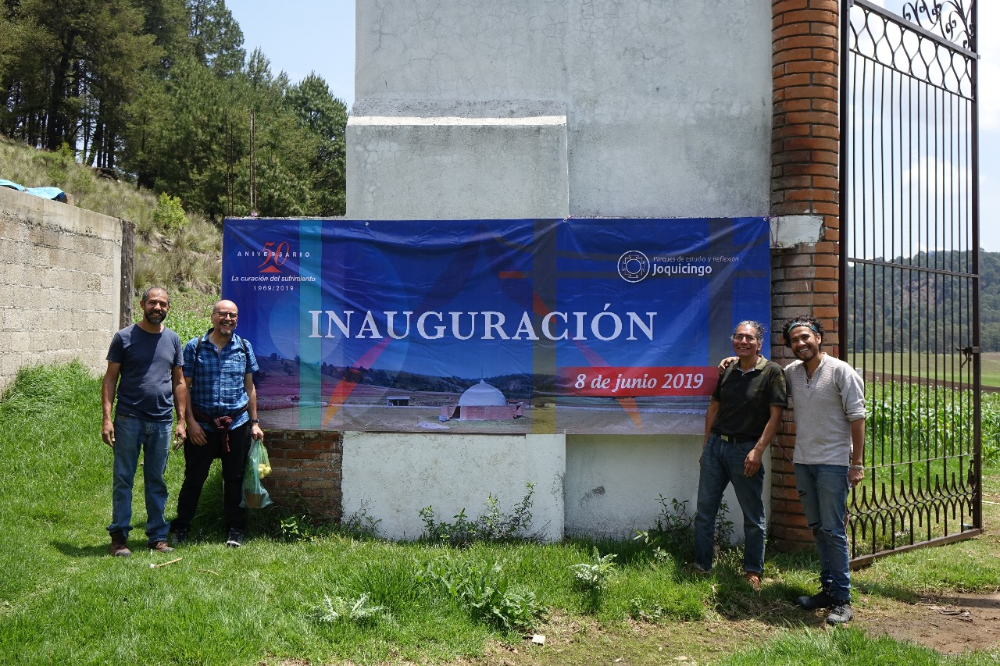

¡Contáctanos!
¿Cómo llegar en transporte público?
Si vienes en transporte público, ve a la terminal de Observatorio y toma el autobús Flecha Roja que va a Tenango. Paga hasta los arcos de Santa María Jajalpa. Pide que te bajen en los arcos, que es donde está el entronque hacia Malinalco. Cruza la avenida para tomar el micro que viene de Tenango hacia Malinalco (también hay taxis colectivos), y pide que te bajen a la entrada de la colonia Ojo de Agua (en el Parque de Estudio y Reflexión Joquicingo). Cruza la carretera y ahí vas a ver el anuncio del parque. Camina 200 metros hacia adentro, por un camino de terracería. El parque está como a 3 kilómetros pasando el pueblo de Joquicingo.
¿Cómo llegar desde Toluca?
Abordar cualquier autobús a Tenango y ya en Tenango, preguntar por las micros que van a Malinalco (están a 3 calles de donde los deja el bus). Abordar la micro a Malinalco e indicarle al conductor que bajan en el Ojo de Agua de Joquicingo. Cuando bajen de la micro, sólo deben cruzar la carretera y caminar 200 metros hacia adentro.
